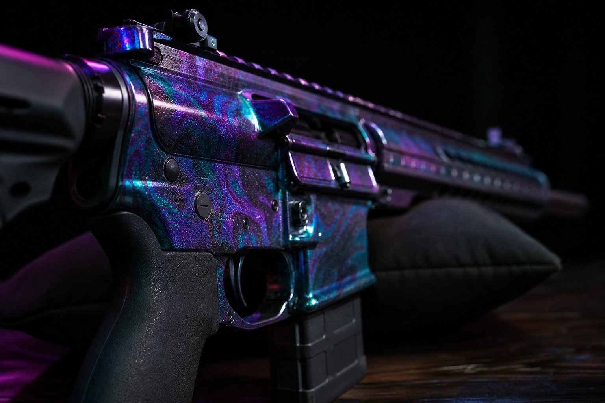

1. Un skin ne change rien — sauf si le jeu le décide
Un skin d'arme est purement visuel : mêmes dégâts, même recul, même cadence. La seule nuance : certains skins d'armes ont une variante « évoluée » accessible par Weapon Evolution, un système de saison qui transforme l'apparence au fil des utilisations ou d'un événement de saison.
Attention à la confusion
Les season kits (PCC-9 Fully-Automatic, M110 Binary, FAL Burst Kit, MPX Vulcan) modifient réellement l'arme. Un skin, jamais. Ne confondez jamais un « skin » (cosmétique) et un « kit » (attachement saisonnier).
2. Le catalogue des skins S7
| Skin | Arme | Set | Comment l'obtenir |
|---|---|---|---|
| Pixel Soldier | AKM | Pixel | Check-in quotidien / Défi de Merit |
| Pixelated Battlefield | AK-74N | Pixel | Check-in quotidien / Défi de Merit |
| Pixel Soldier | Uzi Micro SMG | Pixel | Événement Zombie No Man's Land |
| Shooting Star Panorama | Banshee SMG | Shooting Star | Battle Pass Store / vouchers |
| Shooting Star Panorama | SPR310 (fusil à pompe double canon) | Shooting Star | Battle Pass Store / vouchers |
| Streamlined | MPX Micro SMG | Streamlined | Battle Pass Store / vouchers |
| Streamlined | Mk14 (fusil de précision) | Streamlined | Battle Pass Store / vouchers |
| Streamlined | SKS (carabine) | Streamlined | Battle Pass Store / vouchers |
| Streamlined | F57 (pistolet) | Streamlined | Battle Pass Store / vouchers |
| Black Rock Shooter | ML Lever-Action | — | Missions de saison |
| Catastrophe Survivor | RPK-16 LMG | Infected Area | Missions zone infectée |
| Emerald Arachnid | P90 Micro SMG | Emerald | Supply Emerald Arachnid |
| Emerald Web | FAMAS | Emerald | Supply Emerald Arachnid |
| Emerald Web | M14 | Emerald | Supply Emerald Arachnid |
| Emerald Arachnid | GLI-F4 (gaz lacrymogène) | Emerald | Supply Emerald Arachnid |
| Venomfang | AEK | Toxic Edge | Supply Toxic Edge |
| Venomfang | SCAR-L | Toxic Edge | Supply Toxic Edge |
| Toxic Edge | M67 (grenade frag) | Toxic Edge | Supply Toxic Edge |
| Hazmat Suit | T03 | Hazmat | Supply Hazmat Suit |
| Hazmat Suit | Uzi Micro SMG | Hazmat | Supply Hazmat Suit |
| Tacti-Girl | Desert Eagle | Tacti-Girl | Top-ups de Bonds / valeur équivalente |
3. Les sets : la logique de complétion
Streamlined — 5 armes
Le set le plus large de la saison : MPX, Mk14, SKS, F57. Completement visuel mais cohérent sur 4 calibres différents — c'est le set des collectionneurs.
Shooting Star Panorama — 2 armes
Banshee et SPR310. Petit set, mais deux armes de niche : parfait si vous ne jouez qu'au CQB et au shotgun.
Pixel — 3 armes
AKM, AK-74N, Uzi. Le set rétro-pixel entièrement gratuit via le check-in et l'événement No Man's Land.
Emerald — 4 objets
P90, FAMAS, M14 + le skin de projectile GLI-F4. Le set le plus rentable en pass gratuit (10 pass offerts au niveau 10+).
4. Les 6 chemins d'obtention
- Check-in quotidien — skins Pixel, vouchers, coupons.
- Événement (Zombie No Man's Land, Défi de Merit) — skins RPK-16, Uzi, AKM, AK-74N, et skins exclusifs de personnage.
- Battle Pass Store + vouchers — Shooting Star Panorama et Streamlined.
- Missions de saison — Black Rock Shooter, fond Infiltration, Titanium Case, carte Élite.
- Supplies (Emerald / Toxic Edge / Hazmat) — sets complets, premier tirage gratuit.
- Top-ups de Bonds — Tacti-Girl Desert Eagle et veste Athletic Jacket.
La progression de tirage est conservée
Si vous étiez à mi-parcours sur un banner de la Saison 6, vous reprenez exactement où vous vous étiez arrêté. Aucun tirage n'est perdu au changement de saison — c'est rare et très apprécié des collectionneurs.
5. Le Skin Supply et le pool de la saison
- Le Skin Supply de la saison ajoute 6 nouvelles weapon skins à la pool de tirages.
- Un lot de 1 350 Supply Pass équivaut à 20 tirages (20 × 1 350 = 27 000 passes) : c'est la référence pour évaluer le prix d'un skin en Bonds.
- Obtenir un premier skin vous accorde une remise sur l'achat du second : le premier achat est toujours le plus rentable.
- Les Season 7 Skin Supply Coupon ×15 et ×20 (check-in et événement) sont l'équivalent gratuit de ces tirages : utilisez-les en premier.
Le lexique à connaître
Supply Pass = un tirage. Skin Supply Coupon = un tirage gratuit. Voucher (Tacti-Girl Charm Voucher) = un accès à la pool de charms. Dazzling Token = la monnaie de l'événement des 7/14/21 jours. Toxic-G Token = la monnaie d'Arachne's Web Memoirs. Bonds = la devise payante du magasin. Koen = la monnaie du jeu, jamais en vente.
6. Weapon Evolution : la pelle qui évolue
C'est la mécanique de Weapon Evolution : la Obstacle Clearing Sapper Shovel s'obtient en se connectant 7 jours, puis évolue aux 14 et 21 jours de connexion. Elle est convertible en 2 skins de mêlée (Clearing Sapper Shovel et Battleforged Clearing Shovel) via les Dazzling Tokens dans le menu Customize.
Le geste le plus rentable de la saison
21 jours de connexion → une arme de mêlée évolutive et deux skins de mêlée. Aucun autre contenu de la saison n'offre ce rapport. Si vous ne deviez garder qu'une seule habitude de connexion, c'est celle-ci.
7. La stratégie d'achat
- Commencez par le gratuit : coupons, check-in, événement, missions. Une grande partie du catalogue S7 est accessible sans dépenser.
- Ne chasez que les armes que vous sortez : un skin du SKS sur une arme que vous ne sortez jamais est un achat mort. Le SKS est une carabine de budget ; le skin Streamlined est un must-have de collectionneur, pas de joueur.
- Préparez le set complet avant de tirer : sur les sets de 2 à 5 armes, l'obtention d'un premier élément vous donne une remise sur le suivant.
- Gardez des Bonds en réserve pour la fin de la saison : les banners limités se terminent, les cosmetics ne partent pas.
- Le pass de battle reste rentable si vous visez l'avatar animé premium et la bannière — ce sont des éléments uniques que le BP Store ne vend pas.
Pour le détail des sets de personnage et des Supply, voir le guide des cosmétiques de personnage. Pour le pass lui-même, voir le guide du Battle Pass S7.